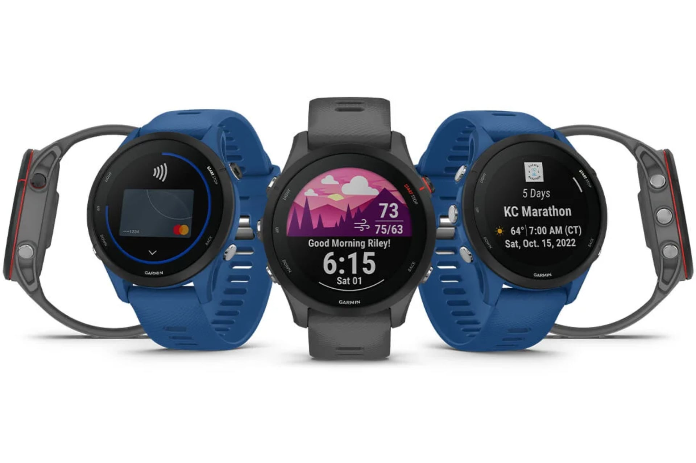

Forerunner 255 : Garmin a validé ce deal de fou, sa montre GPS tombe à 134€ (au lieu de 349€) 🤯

🔥 Top produits tech du moment
Publicité — Liens de partenariat Amazon : une commission peut être reversée, sans surcoût pour vous.
L'actualité tech ne cesse d'évoluer. Nouveaux produits, acquisitions, découvertes : chaque jour apporte son lot d'informations importantes pour comprendre le monde numérique de demain.
Ce qu'il faut retenir
La Forerunner 255 est une montre connectée, elle convient à un public sportif comme aux adeptes du suivi de la santé.
Avec ses fonctionnalités premium et son design attractif, c'est un modèle qui plait...
Ce qui n'empêche pas AliExpress de casser le prix pour son opération "Économies Douanières".
Pourquoi c'est important
Cette information pourrait avoir des répercussions sur tout le secteur technologique. Elle concerne directement les utilisateurs de technologies numériques et mérite d'être suivie de près dans les prochaines semaines. Forerunner 255 : Garmin a validé ce deal de fou, sa montre GPS tombe à 134€ (au lieu de 349€) 🤯 est ainsi un signal à prendre en compte pour comprendre les évolutions du secteur.
En résumé
Retenez l'essentiel : Forerunner 255 : Garmin a validé ce deal de fou, sa montre GPS tombe à 134€ (au lieu de 349€) 🤯. Cette actualité a été rapportée par 01net. Nous continuerons de suivre ce sujet et de vous tenir informés des prochaines évolutions.
🚀 Vous êtes freelance tech ?
Calculez votre TJM en 30 secondes : micro-entreprise, SASU, EURL ou portage salarial. Gratuit, taux 2025.
Calculer mon TJM →Source : 01net